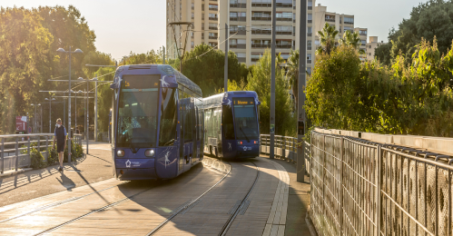

C'est quoi?
TraBuzz une application de transport en commun qui rend le transport en commun fun et pratique, avec pour objectif un déplacement fluide et durable.
 En savoir plusLes avantages de TraBuzz pour leurs utilisateurs
- Information des transports en direct! Les éventuels retards sont donnés avec precision et le plus tôt possible.
- Calcul exact du trajet le plus court, mis à jour en continu grâce à nos milliers d'utilisateurs.
- Tout en favorisant les déplacements en transports en communs, TraBuzz vous permet d'économiser de l’essence et ainsi de participer à l'évolution de notre société.
- Possibilité de gagner des cadeaux tels que des bons de réduction ou de soutenir des fondations/associations qui vous tiennent à coeur.
En savoir plus
Comment fonctionne TraBuzz?
La fonctionnalité de base de TraBuzz est notre carte et les interactions possibles avec elle.
Sur le site à gauche de la carte se trouve une flèche que vous pouvez ouvrir pour y trouver toutes les fonctionnalités.
Vous pouvez, par exemple, enregistrer un chemin au préalable pour voyager sans connexion ou voir quel type de transport est le plus rapide pour vous rendre à votre destination.
La fonctionnalité signalement permet de signaler un évènement sur l’application et de transmettre l'information aux autres utilisateurs.
Si par exemple vous vous trouvez dans un bus surchargé, vous le signalez, ce qui va permettre aux autres utilisateurs de savoir que le prochain bus est surchargé et de soit attendre le suivant ou de changer leur itinéraire.
Le signalement d’évènements comme celui-ci vous rapporte des points qui sont échangeables sur l’application dans l'onglet BOUTIQUE.